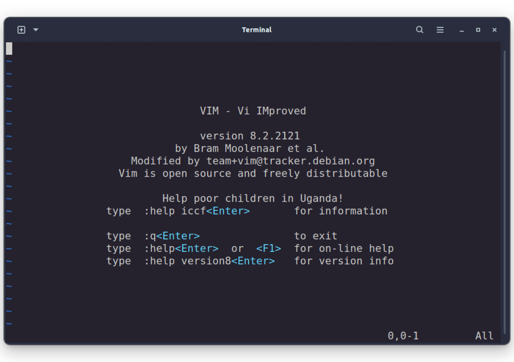
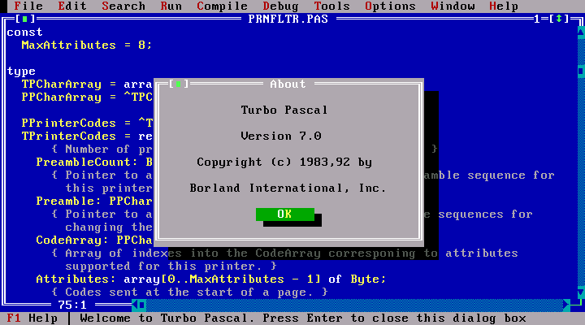
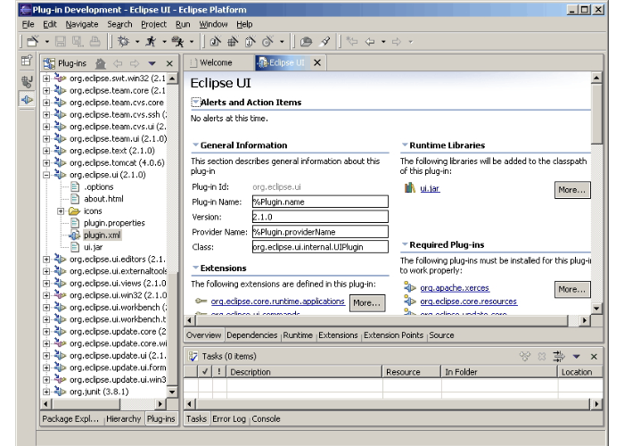
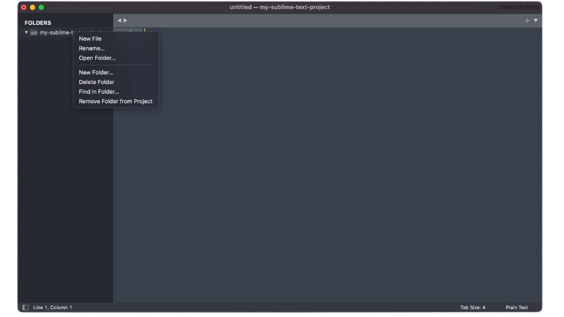
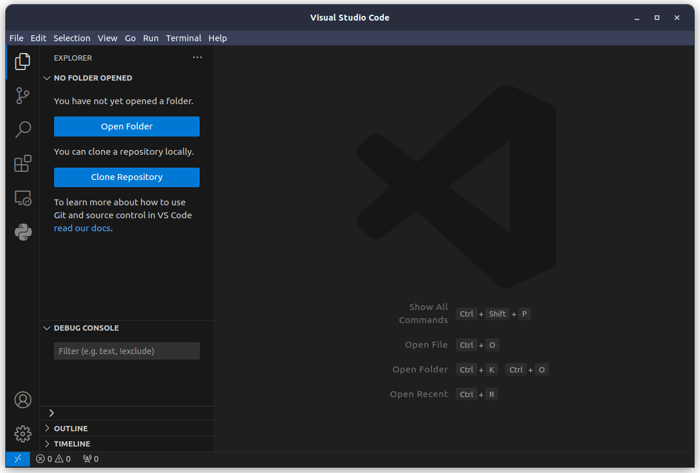
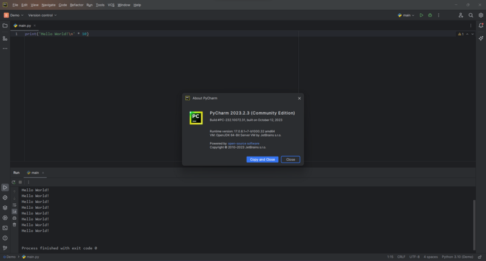

Next step was line editors.
Instead of working with the whole file like in modern editors - you just choose a number of line and modify only its content.
Most popular were ED and SOS editors.
They could be used even without any screen, just with a keyboard.
Then TECO editor appeared and later inspired Emacs.
At the same time, Vi came out.
This started first editor battle that continues till today.
If you google 'vi' - google suggest you 'emacs' and vice versa.
These editors were upgraded line-editors and called full-screen, because they were oriented
for working on display and could show whole document on the screen, not just a line.
Also they have additional features like shortcuts, commands and supported macroses.
Vi evolved into Vim which is popular even now.

Vim interface in modern terminal
In the 80s, the first terminal Integrated Development Environments like Smalltalk-80 and Turbo Pascal.
They were more user-friendly than casual code editors and offered built-in tools for work with programming languages like
debugger, integrated terminal, compiler, code highlighting.

Turbo Pascal interface
Later in the 90s when computer mouses became popular, instead of terminal came IDEs
with graphical interfaces like Visual Studio, Eclipse, NetBeans.
They also offered more tools for refactoring, formatting, and project setup. These editors have a bunch of different plugins as well and you could customize them according to personal needs.

Eclipse interface
Next thing that is worth mentioning - Sublime Text.
It was an answer to IDEs complexity.
It combines best from code editor and IDEs, removing all unnecessary stuff that IDEs were overflowed with.
On top of that, Sublime Text had support for all popular programming languages.
All these made Sublime the ultimate lightweight tool loved by many programmers.

Sublime text interface
Next important step is Vs Code.
It also supports all languages and approaches the lightweight of Sublime, but moves more to IDEs side.
By default, Vs code is pretty simple, but it is highly customizable and has extensions
for pretty much everything because of its huge user base.
You can make any setup you want from Vs Code.
It is the most popular code editor among developers now.

Vs Code interface
Another significant player that can be an alternative for Vs Code - JetBrains with their IDEs.
They have different solutions for popular programming languages.
Instead of Vs Codes' lightweight and customization abilities, IDEs from JetBrains
offer you more and better tools for working with concrete language,
because they are out of the box configured for only one language.

PyCharm interface (IDE for Python from JetBrains)
Vs Code is like a multitool that can help you with all kinds of tasks,
but if you need to do only certain types of tasks, for example assembly furniture you
may want to use a screwdriver instead of multitool.
Now the IT industry is moving to better utilize AI for doing the job more efficiently and so are code editors.
AI code assistants popping up in many forms - plugins for popular IDEs, web services, and independent programs.
The most popular now are Github Copilot, amazon Codewhisperer, Tabnine, Codium.
Vs Code and JetBrains IDEs have plugins that integrate assistants to your editor, if you are looking for
an independent IDE one of the most popular now is Cursor.